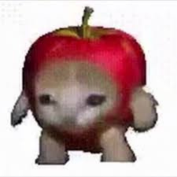
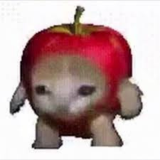

Banana Cat is a fruit banana with a cat's head, drawn by a blogger based on the equally popular Croissant cat. On March 3rd, 2021, Facebook user Sin Achilles uploaded a compilation edit of cats wearing banana suits. The post received more than 7,700 reactions and 26,000 shares in two years.On March 17th, 2023, TikTok user @happyhappiihappy uploaded the earliest appearance of Sad Banana Cat in a Happy Happy Happy Cat video showing the cat going to the hospital. The video received more than 5,500 likes in two monthsThere are also apple Cat, orange Cat and so on, while Banana Cat is the most popular. Banana cat's classic expression is the opposite of happy cat's: Banana Cat often cries.
 
